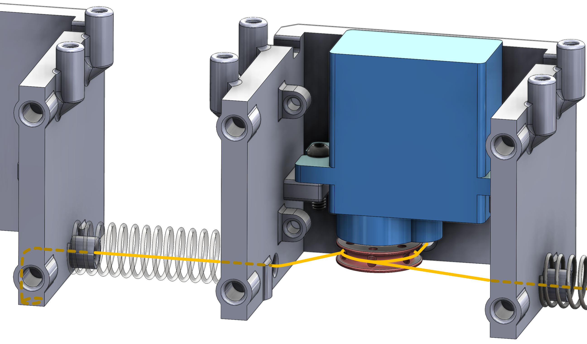
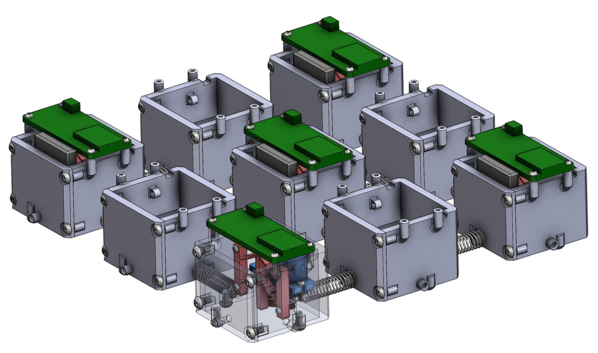

Robotic Metamaterial
Thesis: Design and Deployment of Multistable Robotic Metamaterial
In collaboration with the Interactive and Emergent Autonomy Laboratory
Advisor and Committee Chair: Professor Todd Murphey
Committee Co-Chair: Ilya Mikhelson
Master's Thesis; November 2023 - June 2024

Robot in Dome Structure
Robot Metamaterial Sheet
Sectional CAD View
During my thesis I developed a robotic 'metamaterial', a type of robotic media that leverages it's unique design and properties to exhibit different behaviors. I was able to make the robot locomote, grasp, mechanically sense, and form stable 3D structures. I independently designed, integrated, and tested the mechanical, electrical, and software systems for this robot - ultimately producing my thesis on the work. In tandem with my thesis paper, I developed thorough documentation detailing the robot design, production, assembly, and control of the system, all of which can be found at the bottom of the page.
Put briefly: this system leverages the unique properties of compression springs in their bifurcated states and the bistable configurations of compliant mechanisms, allowing the robot to alternate between states for specific tasks. The robot does this by actuating a servo that tugs on cables routed between other 'nodes', causing the springs to bend. The routing between two nodes is shown below:
 Multiple nodes can be connected together in a variety of configurations due to their modular design, as shown in the image above. Each driven node (driven meaning it has a processor and motor) can be controlled over Wi-Fi, enabling the robot to perform a multitude of tasks, with its only hindrance being the onboard battery life. If you would like to know how the robot works or how it was designed in greater detail, my thesis and documentation explain very thoroughly how to make and control your own. All project files can be found on my GitHub.
Grasping Task
Locomotion Task
The robot is capable of locomotion through with minimal open loop control. A non-uniform probability distribution determines which node will actuate, causing the centroid of the robot to locomote in the direction of the nodes which are more likely to move.
Stable Structure Formation
Some other pretty pictures and Diagrams

Inter Node Cable Routing Side Profile
Inter Node Cable Routing Alt. View
Exploded View
Multiple Cables Routed
Open Active Node
Secondary Exploded View